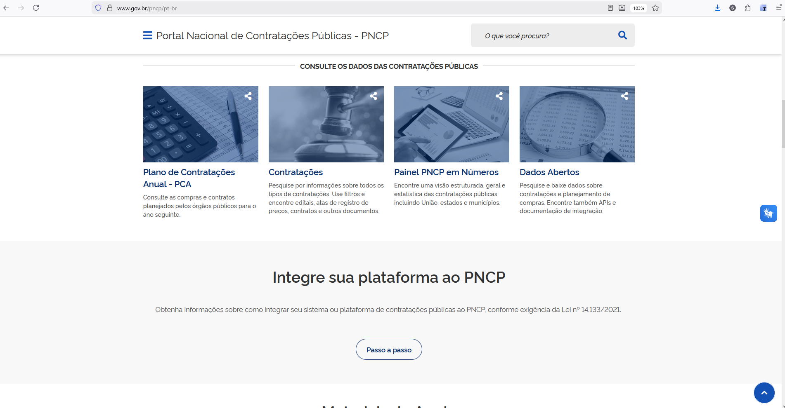

Sumário
Cronograma
Resumo dos prazos do ano de elaboração do PCA e respectivos responsáveis, segundo o Decreto nº 10.947, de 2022.
Cronograma do PCA 2027
Visualização temporal da execução do Plano de Contratações Anual
Introdução
O que é o PNCP e sua importância
O Portal Nacional de Contratações Públicas (PNCP) é o sítio eletrônico oficial destinado à divulgação centralizada e obrigatória dos atos exigidos em sede de licitações e contratos administrativos, conforme estabelecido pela Lei nº 14.133/2021.
Plano de Contratações Anual
Consulte as compras planejadas pelos órgãos para o ano seguinte.
Contratações
Pesquise editais, atas de registro de preços, contratos e documentos.
Painel em Números
Visualize estatísticas das contratações públicas de todos os entes.
Dados Abertos
Acesse APIs e documentação para integração de sistemas.
Acessar a Tela Principal do PNCP
Navegue até o portal e selecione o Plano de Contratações Anual
-
Acesse o portal através do endereço: www.gov.br/pncp/pt-br
-
Na seção "CONSULTE OS DADOS DAS CONTRATAÇÕES PÚBLICAS", clique no card "Plano de Contratações Anual - PCA"

Tela principal do PNCP com destaque no card "Plano de Contratações Anual - PCA".
Buscar pelo IFMA
Pesquise o Instituto Federal do Maranhão no sistema
-
No campo "Palavra-chave", digite:
IFMA -
Clique no botão "Pesquisar" para realizar a busca
Tela de busca com o campo "Palavra-chave" preenchido com "IFMA".
Selecionar o PCA por Ano
Escolha o Plano de Contratações Anual desejado
Após a pesquisa, serão listados os PCAs do IFMA organizados por ano. Você verá informações como:
Ano do PCA
Ex: PCA 2025, PCA 2024
Última Atualização
Data da última modificação
Valor Estimado
Total previsto para contratações
Lista de PCAs do IFMA com destaque para selecionar o ano desejado.
-
Clique no PCA correspondente ao ano que deseja consultar para visualizar os detalhes
Visualizar os Campi do IFMA
Identifique todas as unidades e seus respectivos planos
A tela apresentará as informações gerais do PCA e a lista de todas as unidades (campi) do IFMA:
Informações Solicitadas no Termo de Referência
- I) ID PCA no PNCP
- II) Data de publicação no PNCP
- III) Id do item no PCA
- IV) Classe/Grupo
- V) Identificador da Futura Contratação
Gráfico por Categoria
- Material
- Serviço
- Soluções de TIC
- Obras e Serviços de Engenharia
Tela apresentando os campi do IFMA com gráfico de valor estimado por categoria.
Localizar a Reitoria do IFMA
Encontre a unidade UASG 158128
Resultado da busca destacando a Reitoria do IFMA (UASG 158128).
-
Na tabela "Planos das Unidades", localize a linha correspondente à UASG 158128
-
Clique no ícone de visualização (olho) na coluna "Detalhar" para acessar os itens do plano
Lista de unidades com destaque na linha da Reitoria (UASG 158128).
Filtrar por Tipo de Objeto
Selecione a categoria conforme identificado no DFD
Na tela de detalhamento, você encontrará os itens organizados por categoria. Selecione a categoria correspondente ao tipo de objeto identificado no Documento de Formalização de Demanda (DFD):
Material
Serviço
Soluções de TIC
Obras e Engenharia
Seção "Detalhamento por Categoria" com as opções de filtro disponíveis.
Obter Informações para o Termo de Referência
Localize os dados necessários para instrução processual
Ao selecionar a categoria, será exibida a tabela com os itens do PCA. As informações essenciais para o Termo de Referência são:
| Campo | Descrição | Exemplo |
|---|---|---|
| I) ID PCA no PNCP | Identificador do PCA | 10735145000194-0-000006/2025 |
| II) Data de publicação no PNCP | Data que o PNCP foi publicado | 14/05/2024 |
| III) Id do item no PCA | Número sequencial do item | 60 |
| IV) Classe/Grupo | Classe/grupo que o item pertence | 7510-ARTIGOS PARA ESCRITÓRIO |
| V) Identificador da Futura Contratação | ID único que vincula o objeto à contratação | 158128-33/2025 |
Tabela de itens do PCA com destaque nas colunas relevantes para o TR.
Dúvidas?
Entre em contato com a Coordenação de Licitações e Compras - CLC/PROAD
Coordenação de Licitações e Compras - CLC/PROAD
Licitacoes@ifma.edu.brTelefone de contato
(98) 3215-1701